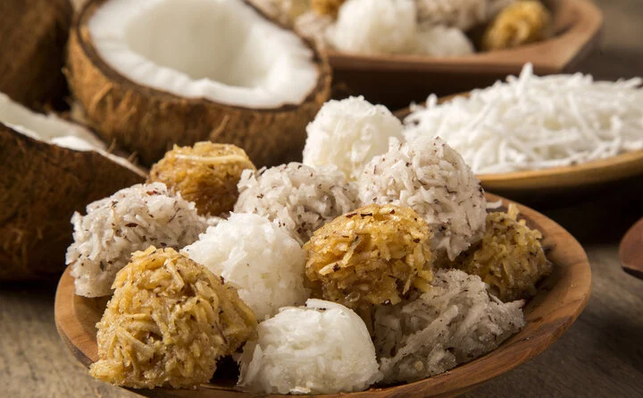

descriçao:
extremamente cremoso, derrete na boca, sem aquela textura de textura de gelatina que encontramos na maioria dos pudins.
Para ficar perfeito, a calda de caramelo que escorre pelo pudim dá o toque final a esta maravilhosa receita
ingredientes
- 500g de rapadura picada
- 1 litro de leite
- 500g de coco ralado fresco
modo de preparo
- Ferva o leite e em seguida acrescente a rapadura.
- Mexa bem até a mistura reduzir de tamanho e ficar tipo um caramelo.
- Coloque o coco ralado fresco e misture.